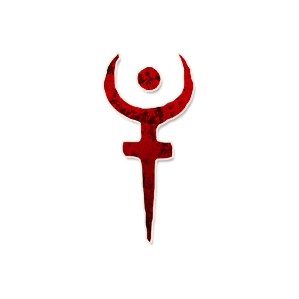

背景故事
“……阅后即焚”
角色能力
信源
每个夜晚*，你要选择一名玩家：他死亡，然后你会得知一名在昨天白天提及过你的玩家：你可以让他死亡。
角色简介
伽迪斯让玩家不敢轻易提及他人。
- 每当一名玩家提及伽迪斯玩家时，他就有可能被说书人作为额外杀死的选项提供给伽迪斯。
范例
小熊是伽迪斯，小火在和小船的私聊中提到了他认为小熊是善良的。在夜晚小熊杀死玩家后，说书人向他示意小火提及过他，小熊同意后小火也死亡了。
玥姐是报丧女妖，小邱是伽迪斯。在白天时，只有玥姐公开向大家表示“老何是伽迪斯”。当晚，小邱无法额外杀死任何玩家。
运作方式
- 在白天时，每当有玩家在白天公开提及伽迪斯玩家时，将一枚“死亡”提示标记放在那名玩家的角色标记旁。玩家可能以任何方式提及伽迪斯玩家，如伽迪斯玩家的姓名、昵称、头衔乃至于其所坐座位的某些特征——这些都会被当作“提及过”。
- 除首个夜晚外的每个夜晚，唤醒伽迪斯。让伽迪斯指向一名玩家。该玩家死亡，在他角色标记旁放置“死亡”提示标记。
- 随后，为伽迪斯指向一名放置了“闲言”提示标记的玩家，让伽迪斯以点头或摇头的方式表示是否希望你所指定的玩家死亡。如果是，将“闲言”替换为“死亡”提示标记。否则移除所有“闲言”提示标记。
提示标记
- 闲言
- 放置时机：在一名玩家公然提到伽迪斯玩家时。
- 放置条件：不论伽迪斯是否醉酒中毒，都会将一枚标记放在对应玩家角色标记旁。
- 移除时机：在黎明时说书人宣布死亡玩家后，或伽迪斯死亡或离场时。
- 死亡
规则细节
- 事实上，由于是说书人选择伽迪斯能力的额外死亡目标，因此说书人只需要留意特定几名玩家的发言中是否有提到伽迪斯玩家。
- 触发伽迪斯能力的条件是提到伽迪斯玩家，而非“伽迪斯”角色本身。
与特定角色互动
- 西西弗斯：如果西西弗斯选择变成伽迪斯，伽迪斯每个夜晚可以选择两名玩家，但是说书人仍然只会指出额外一名玩家并询问伽迪斯是否将其杀死。
相克规则
Json字段
图标画师
Lei.